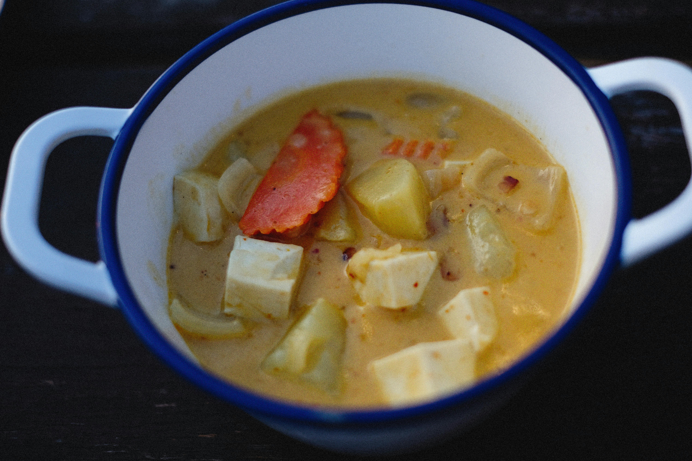

Potato soup is a rich, comforting classic known for its velvety texture and "stick-to-your-ribs" heartiness.
It typically features a creamy base made from a blend of milk or cream, broth, and the natural starches released from simmered potatoes.